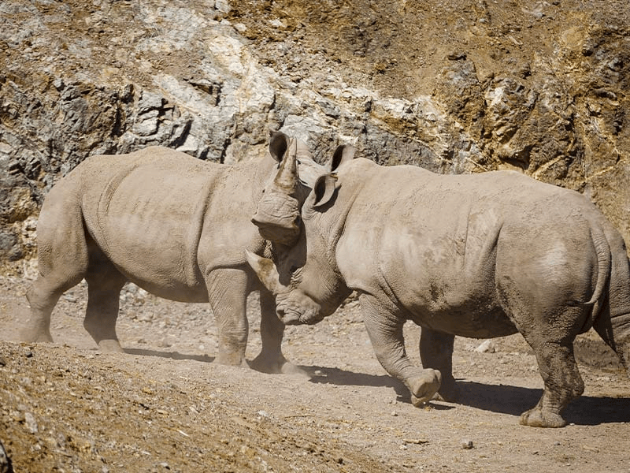

(Ceratotherium simum)

El habitat tííco del rinocento blanco incluye bosques densos, sabanas y bosque son aberturas cubiertas de hierba, cerca de fuentes de gua. En las regiones Kenia, Namibia
y Zimbabue, aunque la gran mayoría se encuantra en Sudafrica. Suele habitar en bosques abiertos y secos, con buenos pastizales para poder alomentarse (de buhos, hierbas
y hojas: la base de su dieta). De costumbres nocturnas, es el más socianble de los rinocerontes y se agrupa en parejas de madres-cría o en manadas de hasta 7 ejmplares
jóvenes.
Caracteristicas
- El rinoceronte blanco es el más ésado, con un peso de hasta 2.300 kg (5,000libras).
- El bebé de un rinoceronte blanco siempre correrá adelante de su madre.
- Los rinocerontes blacos, por otro lado, son los mas sociables de las 5 esocies de rinocerontes y, a menudo, se pueden ver en grupos de hasta 15.
- El cuerno de rinoceronte está hecho de queratina, la misma proteína que forma la base de nuestro cabello y uñas.
- Es habitual ver a los rinocerontes rodando en el narro, creando una "cpa de barro" protectora para mantenerse fresco, evitar que los insectos los pique y deshacerse de los parasítos.
REGRESAR AL MENU